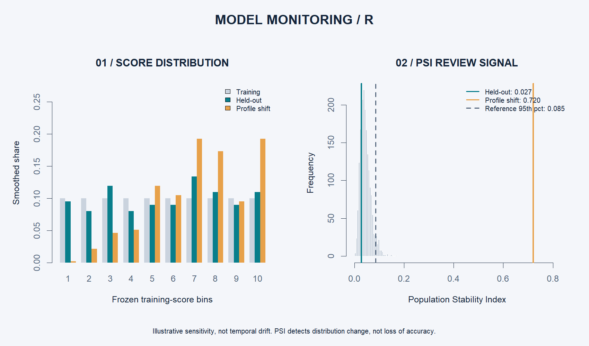
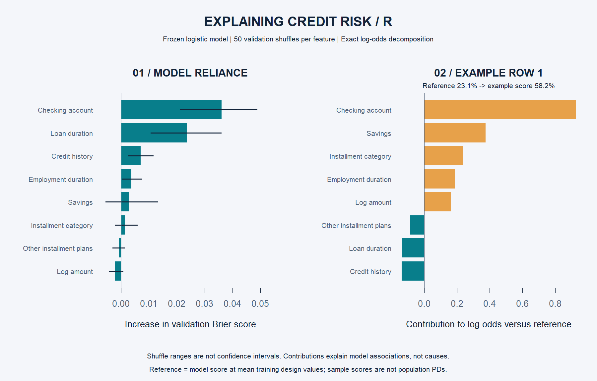
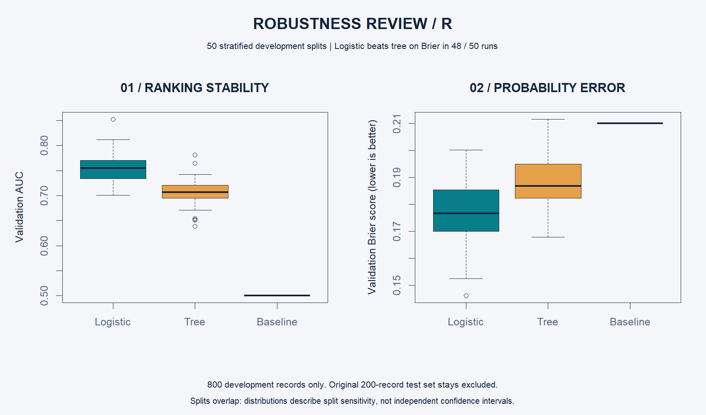
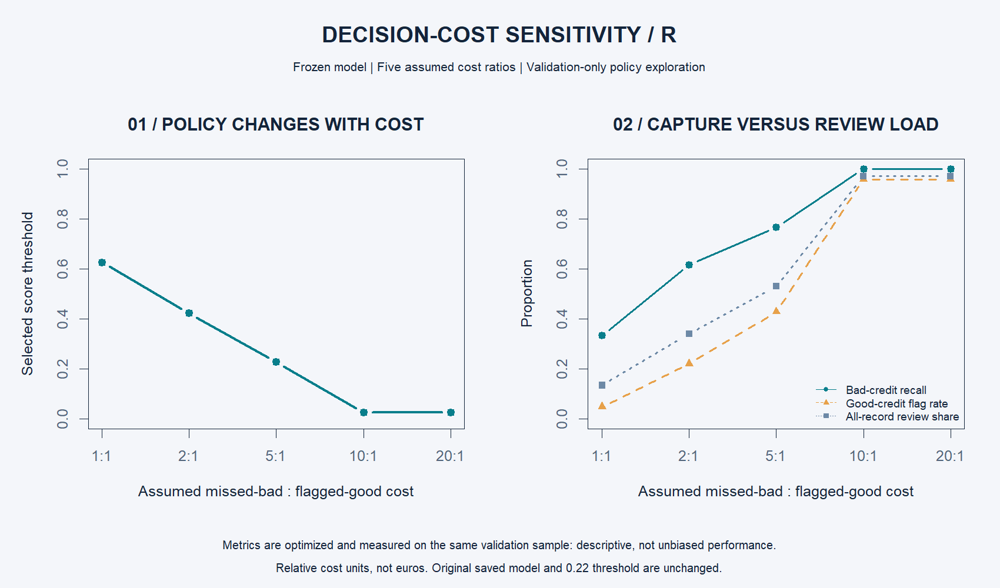

FINANCIAL RISK / PORTFOLIO STUDY
Good ranking.
Real decision trade-offs.
An R analysis of historical credit outcomes, comparing an interpretable model with a shallow tree and making error costs explicit.
0.750Held-out ROC-AUC
16.3%Lower Brier error than baseline
80%Bad-credit cases flagged
The finding
Logistic regression won on validation Brier score. On the held-out test sample it captured 48 of 60 bad-credit cases at the selected threshold, but flagged 65 of 140 good-credit cases too. Better ranking does not remove the need to weigh decision costs.
Data split: 600 training / 200 validation / 200 test. Bootstrap AUC interval: 0.673–0.817.
Model comparison
| Model | Validation Brier | Test AUC | Test Brier |
|---|
| Logistic regression | 0.1805 | 0.750 | 0.1757 |
| Shallow tree | 0.1946 | 0.672 | 0.1966 |
| Constant baseline | 0.2100 | 0.500 | 0.2100 |
A transparent decision rule
Assume a missed bad credit costs five units and a wrongly flagged good credit costs one. The validation-selected threshold is 0.22. Test cost is 125 units, versus 140 for flagging everyone and 300 for flagging nobody. These are assumed relative costs, not monetary savings.
The limitation that matters
Bad credits were oversampled. Scores and calibration apply to this historical sample, not a current lending population. No deployment readiness, causal effect, or fairness guarantee is claimed. The bootstrap interval does not include training uncertainty.
Added: model monitoring
Frozen training-score bins and Population Stability Index (PSI) extend the project into ongoing model review. Held-out PSI is 0.027; a designed borrower-profile shift produces PSI 0.720, exceeding the simulated reference threshold of 0.085.

This is a sensitivity scenario, not observed temporal drift. A flag prompts investigation, not automatic retraining. Read assumptions and methodology.
Added: explainable predictions
Checking-account status and loan duration lead validation permutation importance. An exact logistic decomposition reconstructs example row 1 from a 23.1% reference score to a 58.2% sample score. Contributions add in log odds, not probability points.

These are model associations, not causal effects. Read methodology and limitations.
Added: robustness across 50 splits
On development data only, logistic regression averaged 0.754 AUC and beat the tree on Brier in 48 of 50 runs. The original test set remained excluded. Overlapping splits describe sensitivity, not independent statistical significance.

Read the robustness brief | Full execution log
Added: decision-cost sensitivity
With equal error costs, the selected policy flags 13.5% of validation records. At a 10:1 missed-bad versus flagged-good cost, it flags 97%. This makes review workload visible alongside risk capture.

Validation-only exploration; original saved threshold and test results unchanged. Read methodology.
Validation decision and SQL evidence
Retain as an educational benchmark; do not deploy for lending. All 12 SQL data-quality controls passed. Five temporary fault injections confirmed detection of missing, invalid, and inconsistent data. R modeling and SQL checks were both executed successfully.
Read the validation memo | SQL methodology | SQL execution log